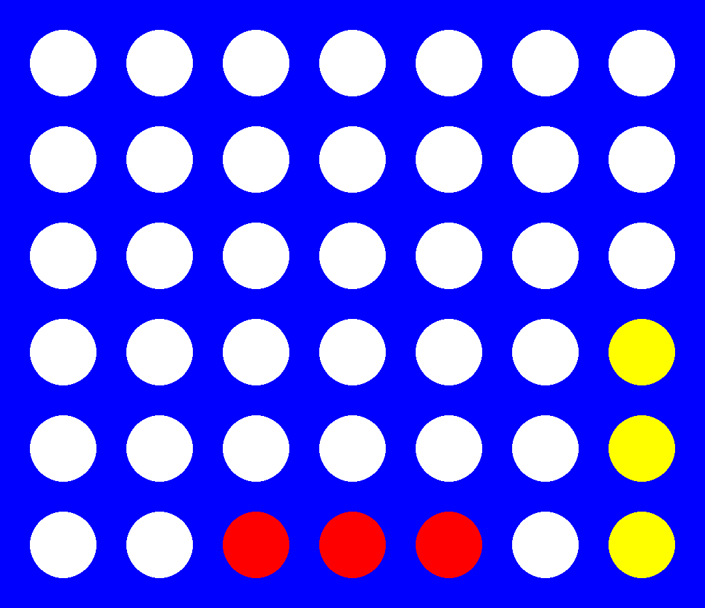
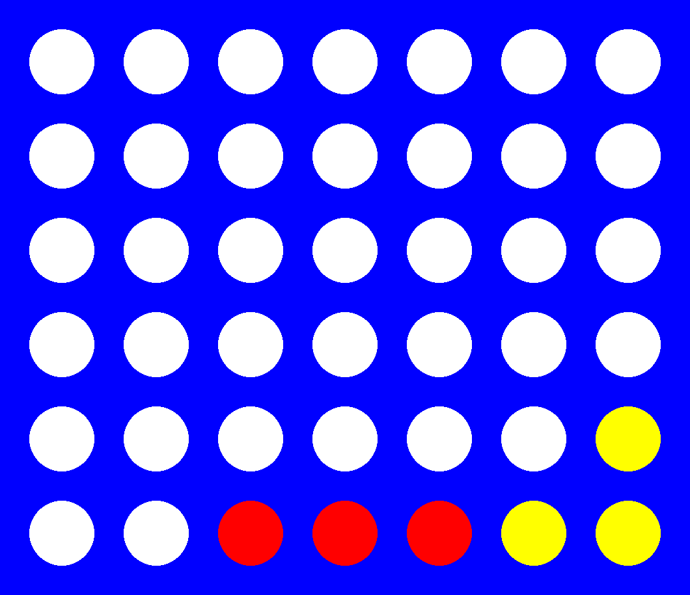
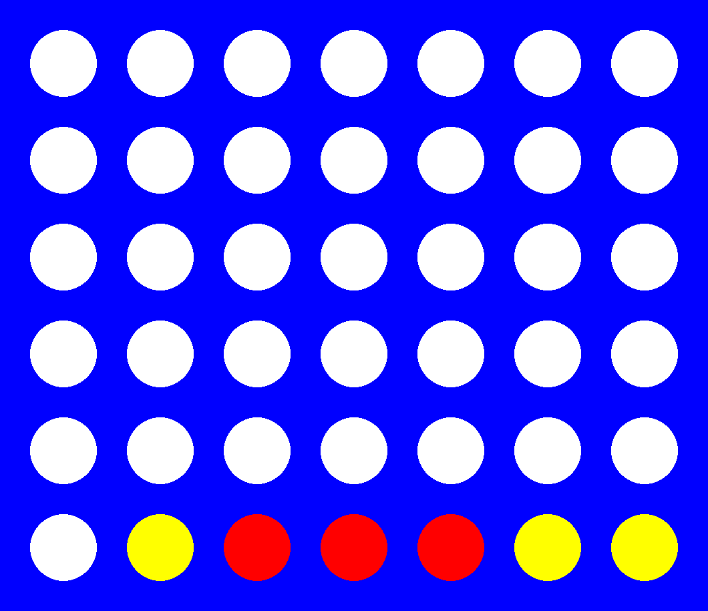
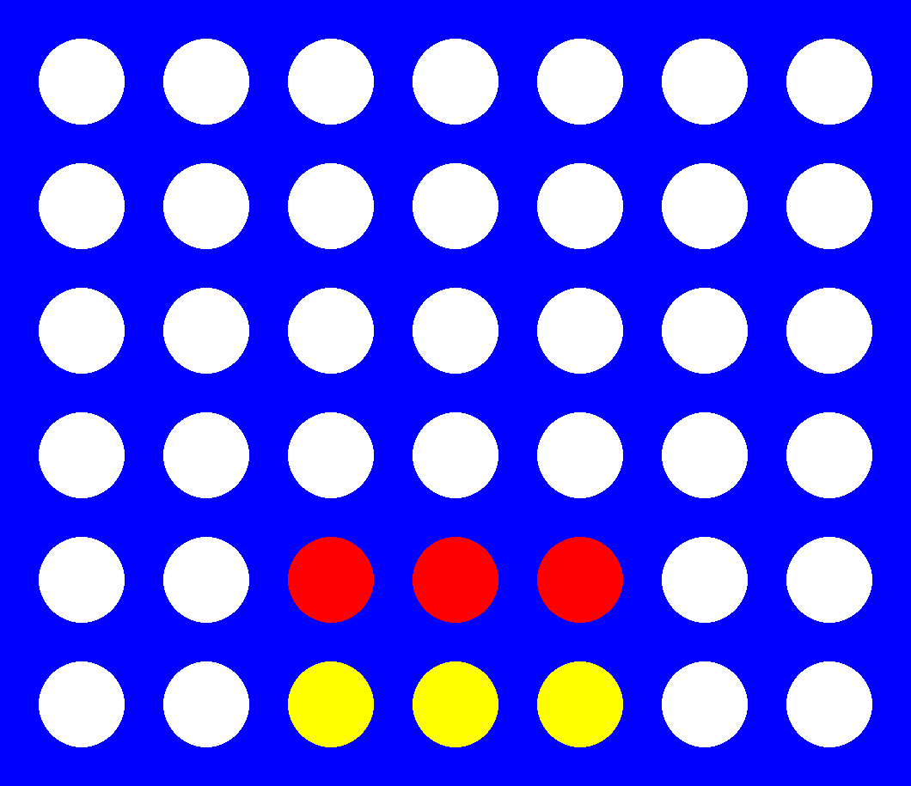
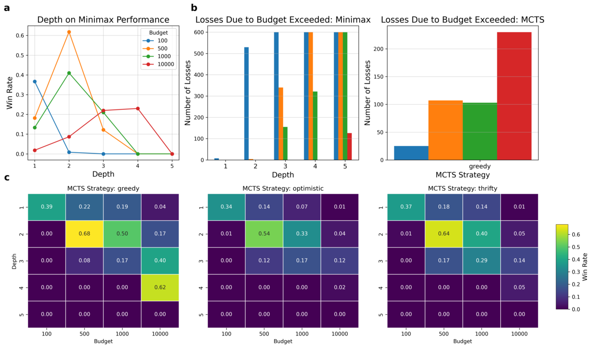
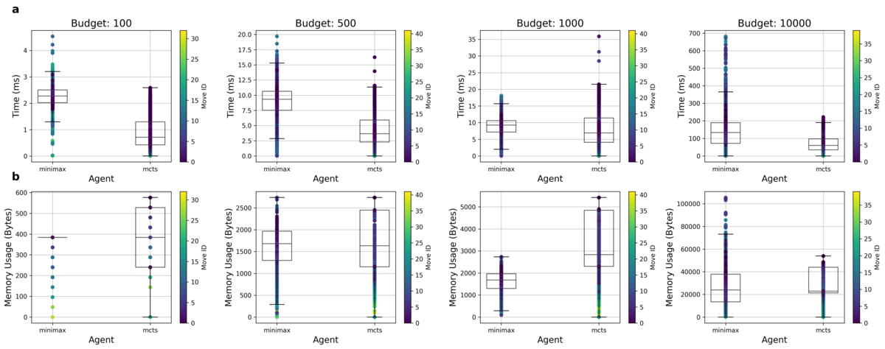
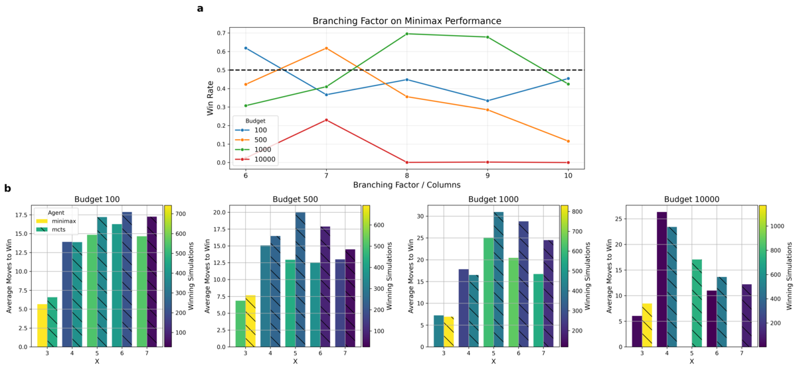

Two ways to play Connect 4
Connect 4, a solved perfect-information strategy game, has established itself as a staple in game AI research. With the rise of advanced non-machine-learning search techniques like Monte Carlo Tree Search (MCTS), traditional methods such as heuristic Minimax are struggling to maintain their relevance. Here I offer an empirical comparison of these approaches using both result-oriented and result-agnostic metrics to assess their performance in a Connect X setting (relaxation of Connect 4). The code is in the repo.
Minimax Search, introduced by Von Neumann in 1928, is considered a theoretical foundation for solving competitive zero-sum, perfect information problems. The algorithm assumes two players, Max and Min, and assigns values to every terminal node in a game tree based on a heuristic or evaluation function. Terminal nodes represent winning states or states at a specific depth, determined by a hyperparameter relative to the current root state. If a non-terminal node has Max as the agent to move, the value of will be the maximum of its successors. Conversely, if Min is the agent to move, the value of will be the minimum. Alpha-beta pruning is often incorporated into the Minimax algorithm to evaluate the game tree at a reduced cost. It does this by “pruning” branches that are guaranteed not to affect the value of .
Monte Carlo Tree Search (MCTS) gained prominence for automating Go gameplay. As an anytime algorithm, MCTS can be stopped at any point to provide the best current estimate, often within a pre-defined budget of iterations due to practical constraints. Each iteration includes four phases: Selection (explores the existing tree using a tree policy, which in my case is UCB11), Expansion (adds at least one new node to the tree), Simulation (random gameplay to simulate outcomes), and Backpropagation (propagates payoffs through the tree).
I implemented Minimax recursively, with each tree node invoking the same function on its successors. I also built an explicit tree data structure while the algorithm ran. This wasn't necessary, I did it mainly for evaluation purposes, but it's worth noting that implementations that don't construct this tree may get different numbers for metrics like the time taken to pick a move. I also added alpha-beta pruning to cut down the search cost.
The evaluation function I used to guide the Minimax search is heavily inspired by the literature, specifically by the work of Kang et al.2. I won't provide a theoretical proof of its admissibility, but I'm fairly confident in it based on domain-specific knowledge of the game.
| ID | Sequence | Explanation | Utility |
|---|---|---|---|
| 1 | Winning state. | inf | |
| 2 | 2.1 Spaces available at both sides. | inf | |
| 2.2 Space available at one side. | 90000 | ||
| 2.3 Spaces available at neither side. | 0 | ||
| 3 | 3.1 Spaces available at both sides. | 50000 | |
| 3.2 Spaces available at one side. Depends on number of spaces available (). | |||
| 3.3 Spaces available at neither side. | 0 | ||
| 4 | 1 | Depends on chip’s distance to center column (). |
The function can be broken down into 4 distinct features, as shown in the table above. Each feature corresponds to the presence of chip sequences of length . Each feature is made up of sub-cases that help determine the value of a given game state. The most important feature is 1, which returns a value of infinity on the winning terminal nodes, as no other state is more valuable. I calculate the function for the perspectives of players that maximize () and minimize (), with a final value of to balance out the resulting heuristic value.
For simplicity, I'll use the figure below to explain the subcases of feature 2 in a game with board dimensions [6, 7] and . Assuming that red is , would yield infinity for the leftmost state, since a win is unstoppable at that point (2.1). The middle left state would result in 90k, as it represents an immediate advantage/threat (2.2). On the other hand, both the middle-right and right-most boards would yield 0, as the former cannot lead to a win, and the latter does not have any immediately available moves on either side (2.3). I do this to ensure that the does not overestimate a state’s utility.
Note that E yields a value of 0 when there is a single available space (s = 1) on one of the sides of a C-2 sequence (3.2). I propose the equation:
as it guarantees a utility of 40k for the case of 5 available spaces, the maximum of a traditional board of 7 columns, while still being lower than 3.1. One could reasonably argue that this might not scale well to different board sizes, and I recognize this as a weakness of feature 3.2. In contrast, feature 4 will return a much lower value, as it is significantly less powerful than the other combinations. Chips closer to the center have a higher utility as they provide an increased number of potential plays being further from the edges of the board.




For the implementation, I used heavily optimized convolution operations to detect chip sequences of given lengths throughout the board. The convolution kernel I employed consisted of all zeroes, except for the locations corresponding to the sequence being targeted, where ones were placed.
Since Minimax search would theoretically be able to expand the entire game tree at each move to assess every possible state, I set four distinct computational budgets to ensure a fair comparison. The budget refers to Minimax’s game state evaluations (tree nodes) and MCTS’ game tree rollouts. Since Minimax’s budget consumption depends on its depth parameter, I assess different depths. On the other hand, since the number of MCTS’ rollouts is budget-agnostic, I came up with three different strategies to control its consumption behavior:
- Thrifty: Allocates the same budget to every move, assuming a game with chips dropped.
- Optimistic: Allocates a budget of 1 to the last move, with uniformly increasing budgets for earlier moves. This agent is optimistic about the possibility of winning earlier with a larger budget.
- Greedy: Allocates the entire budget equally among the first half of potential moves, leaving no budget for the second half.
When an agent runs out of computational budget in the middle of a game, it forfeits, and its opponent automatically wins. Note that Minimax will have depth number of additional moves after its budget is consumed, since it can reuse the tree computed in previous moves without further state evaluations.
I ran two main simulation sets to empirically compare both algorithms, consisting of 12k and 19k total simulations respectively. Both involved a number of repeats per unique combination of hyper-parameters to ensure fairness in the assessment of both agents. The hyper-parameters in question were: {depth, starting agent, budget, and MCTS strategy} and {board dimensions (and X values), budget, MCTS strategy, and starting agent}. I left depths out of the second set and only kept the best-performing ones from the first to compete.



As evidenced from the results, the number of losses due to budget depletion is inversely proportional to the win rate for any given budget, which aligns with theoretical expectations. The optimistic MCTS performed the most consistently across multiple budgets and depths, followed by the thrifty and greedy. The heatmaps reveal that the choice of MCTS strategy is crucial. Although the idea of a greedy agent was appealing, particularly for larger budgets, games tend to take longer when agents can afford to utilize more computation, which resulted in a significant number of greedy losses due to budget depletion. On the other hand, I was pleased to see that the optimistic agent performed relatively close to my expectations. Since the game tree is significantly bigger at early stages (as I'll explain later),the higher initial budget allows for MCTS to build a better foundation of chips.
Picking moves at later stages of the game requires less memory for both algorithms, which aligns with a decreasing branching factor for the states in question. However, I didn't find clear patterns concerning the time taken to pick a move and its timing–how late or early in the game the move was played. Moreover, MCTS built overall larger game trees in most budgets, which could explain its higher win rates. In fact, the only case where Minimax’s mean memory consumed was significantly higher (budget 500) is also the case where Minimax could win more games than its Monte Carlo counterpart. One could think of this budget and depth combination as a “sweet spot” in Minimax’s favor, where the richest trees were able to be generated without risking computation depletion. Moreover, the growth in time and memory is exponential with respect to depth and budget for both agents.
For the second set of simulations, I'd say that MCTS generalized better across different board and rule configurations. However, I was surprised to see Minimax achieve really high win rates for some of these new combinations. Focusing on the three cases mentioned before, I can carry over what the result-agnostic box plots showed to argue that increasing the branching factor allowed for a Minimax algorithm that fully utilized its computational budget (since a higher branching factor would result in bigger game trees), specializing in outclassing MCTS for said combinations (around 70% win rate). Minimax also seems to perform better at really low budgets and small boards, since terminal states are reached faster. On the contrary, MCTS shines at higher computational budgets, particularly when paired with larger board sizes. Interestingly, the weakness identified on feature 3.2 did not really hold in practice, as budgets 100 and 1k didn’t appear to perform significantly worse for bigger board sizes.
- Peter Auer. Finite-time Analysis of the Multiarmed Bandit Problem. Kluwer Academic Publishers, 2002.
- Xiyu Kang, Yiqi Wang, Yanrui Hu, et al.. Research on different heuristics for minimax algorithm: Insights from Connect-4 game. Journal of Intelligent Learning Systems and Applications, 2019.